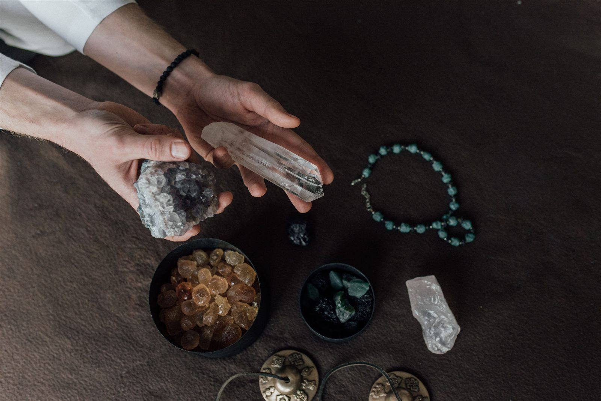

De trei-patru ori pe an, comunitatea astrologică își ține respirația. Mercur, planeta care guvernează comunicarea, tehnologia, călătoriile și logica, pare să se rotească înapoi pe cer. În timpul lui Mercur retrograd, curgerea firească a informației se încurcă. E-mailurile se întorc, zborurile întârzie, foștii îți scriu din senin, iar conversațiile simple se transformă în neînțelegeri uriașe.
Deși nu poți opri planetele din mers, poți crea un scut energetic între aura ta și haosul cosmic. Aici strălucește magia cristalelor. Lucrând cu pietre anume, care țintesc limpezimea, împământarea și comunicarea, poți trece peste valul retrograd fără să-ți pierzi mințile.
Trusa de supraviețuire pentru retrograd: 4 pietre esențiale
Nu orice cristal se potrivește în timpul acestui tranzit. Ai nevoie de pietre care să contracareze tocmai tulburările preferate ale lui Mercur: ceața mentală, reacțiile emoționale la cald și dezastrele tehnologice.
1. Turmalina neagră: paznicul spiritual
Când vremea cosmică se înăsprește, turmalina neagră este scutul tău de mare rezistență. Această piatră profund protectoare absoarbe energia haotică și imprevizibilă din jurul tău, ca să nu se așeze în aura ta. Este cunoscută mai ales pentru capacitatea de a bloca smogul electromagnetic, ceea ce o face tovarășa perfectă când laptopul și Wi-Fi-ul o iau razna.
Vibrația: protecție energetică și limite clare.
2. Fluoritul curcubeu: antidotul pentru mintea încețoșată
Mercur retrograd e faimos pentru senzația că nu mai poți gândi limpede. Fluoritul, numit adesea „piatra geniului”, funcționează ca un aspirator pentru gândurile împrăștiate și dezordonate. Când logica emoțiilor încearcă să preia controlul, fluoritul te readuce la o gândire clară și structurată, ajutându-te să iei decizii limpezi când totul în jur pare încețoșat.
Vibrația: limpezime mentală extremă, concentrare și ordine.
3. Amazonitul: alinarea chakrei gâtului
Pentru că Mercur guvernează comunicarea, chakra gâtului are mult de suferit în timpul unei retrogradări. Amazonitul este piatra adevărului și a armoniei. Te ajută să-ți spui părerea limpede, dar calm, domolind impulsul de a trimite un mesaj scris la nervi. Face legătura dintre inimă și gât, ca să comunici cu empatie, nu cu frustrare.
Vibrația: comunicare sinceră, calmă și cu limite sănătoase.
4. Hematitul: ancora grea
Când planurile se schimbă în ultima clipă sau întârzierile te lasă blocat pe drum, e ușor să aluneci în anxietate. Hematitul este o piatră grea, metalică, din oxid de fier, care îți trage imediat energia în jos, afară din capul tău agitat și stresat, înapoi în corpul tău fizic.
Vibrația: împământare supremă, stabilitate și reziliență.
Magie practică: cum să-ți folosești cristalele
Nu ai nevoie de un ritual complicat de două ore ca aceste pietre să lucreze pentru tine. În timpul unei retrogradări, păstrează-ți magia simplă și făcută cu intenție.
- Ancora de pe birou: Așază o bucată de turmalină neagră și un octaedru de fluorit chiar lângă calculator. Nu-ți vor repara ca prin minune un hard disk stricat, dar creează o ancoră energetică în spațiul tău de lucru, care te ajută să rămâi calm și concentrat când tehnologia, inevitabil, o ia pe arătură.
- Metoda din buzunar: Dacă ești pe drum sau te îndrepți spre o întâlnire importantă, poartă în buzunar o bucată de amazonit și una de hematit. Înainte să vorbești sau când simți că te enervezi la poarta de îmbarcare, bagă mâna în buzunar, atinge pietrele și respiră adânc.
- Grila de protecție pentru retrograd: Pe toată durata tranzitului, așază în dormitor o grilă simplă de cristale. Pune în centru un vârf de cuarț transparent, ca să-ți amplifici intenția, și înconjoară-l cu turmalină, fluorit și amazonit. Rostește-ți intenția cu voce tare: „Am picioarele pe pământ, comunic limpede, iar energia mea este ferită de haos.” Las-o așa până trece perioada de umbră a retrogradării.
Surse și lecturi suplimentare
- Crystals Alchemy: “Best Crystals for Mercury Retrograde: Your Survival Guide”
- Love Crystals: “Mercury Retrograde Crystals”
- Happy Soul Crystals: “Navigating Mercury Retrograde with Crystals”